[ 遠野 森羅・前日譚： 冬空のペルセウス ] 公開中

遠野
森羅
学園の２年生で転校生。他人の「痛み」を自分に移す力を持っている。身寄りがなく、その力のせいで、過去何度も他人に利用されたり問題を起こしているが－それでも、自分の力にはなにか意味があると信じている。
慎重で冷静な性格だが、根本にあるのはお人好しさ。
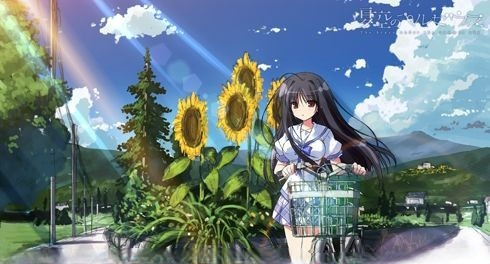
世界に私と森羅の２人だけだったらよかったのに
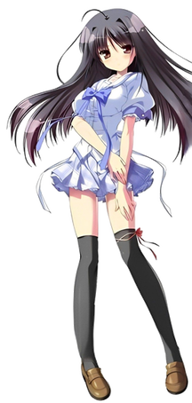
遠野
恋
学園の１年生で転校生。兄である森羅と同じ力をもっている。
物心ついたころから他人に利用されていた過去により、人間不信を抱いている。世界で信じられるのは、同じ力をもった兄の森羅だけ。
自己中心的でわがままだが、行動理由の最優先事項は森羅のこと。お人好しな兄のことを姉であり、母であり、ひとりの女として愛している。
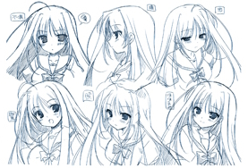
[ ボイスサンプル｜cv. 楠原ゆい ]
-
サンプル1 -
サンプル2 -
サンプル3 -
サンプル4
[ CGサンプル ]
サムネイルをクリックすると画像を拡大して、ご覧頂けます
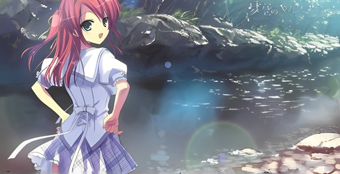
友達だから、…キスしてくれないのかな？
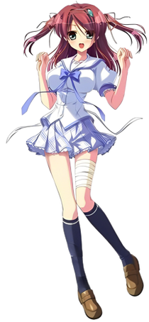
皆川
翠
学園の２年生で水泳少女。春先に山道から落ちる事故に遭い、足に怪我を負っている。いつもの夏なら元気に沢で泳いでいるのだが、今年は泳げなくて残念がっている。
活発で明るい性格だが、仲間内では一番臆病な、女の子らしい女の子。年上の兄姉ばかりの家庭で育ったせいで、耳歳増なところがある。
今まで周囲にいなかった同年代の異性である森羅に強い興味をもつ。
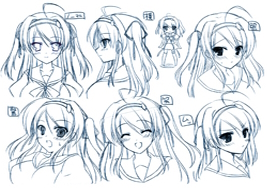
[ ボイスサンプル｜cv. 立花あおい ]
-
サンプル1 -
サンプル2 -
サンプル3 -
サンプル4
[ CGサンプル ]
サムネイルをクリックすると画像を拡大して、ご覧頂けます
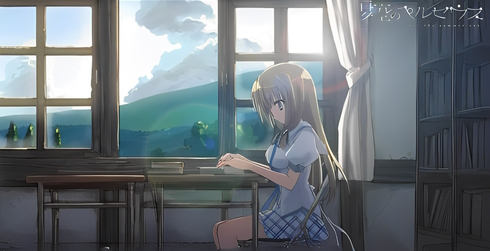
お、おっぱいは関係ないですよ！？
菱田
あやめ
学園の３年生で文学少女。ヒロインたちの中では最年長で、沢渡透香と一緒に他のメンバーの授業の面倒を見ている。
箱庭のような村の箱入り娘であったため世間に疎い。かなりの天然ボケかつ素直な性格で、喜怒哀楽によってころころと表情を変える。
半年前、交通事故で両親を亡くし－同乗していたあやめは、目の前で両親が死んでいくのを目にして心の傷を負っている。
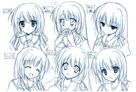
[ ボイスサンプル｜cv. 桜井美鈴 ]
-
サンプル1 -
サンプル2 -
サンプル3 -
サンプル4
[ CGサンプル ]
サムネイルをクリックすると画像を拡大して、ご覧頂けます
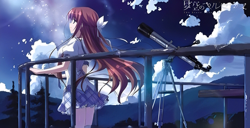
似てるみたいですね、私たち
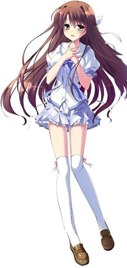
沢渡
透香
学園の２年生で天文部。
不治の病を抱えている。この夏は超えられないだろうと言われていて、最後の思い出作りに無理を言って学園に通っている。
"良い子"を体現したような性格だが、はかなげな外見に見合わない天真爛漫な明るさをもつ。公開の内容に生きようとしているので、言いたいことは言うし、やりたいことはやる。
いたいことは言うし、やりたいことはやる。
まっすぐな少女。
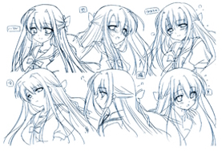
[ ボイスサンプル｜cv. 市川ひなこ ]
-
サンプル1 -
サンプル2 -
サンプル3 -
サンプル4
[ CGサンプル ]
サムネイルをクリックすると画像を拡大して、ご覧頂けます